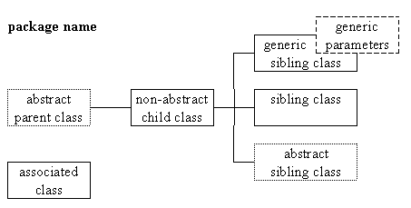

Class Hierarchy Diagrams

A hierarchy diagram illustrates the parent/ child inheritance and sibling relationships between classes. It can also be used to illustrate the contents of a Java package (a collection of classes) which may include more than one hierarchy or, as in this example, isolated associated classes.
Each of the boxes in the hierarchy can be thought of as the box at the top of a class diagram and follows the same conventions. Any abstract packages are shown with dotted lines and any generic packages have their generic parameters illustrated in the top right hand corner.